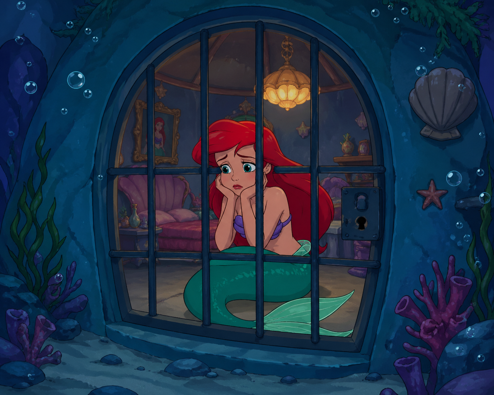
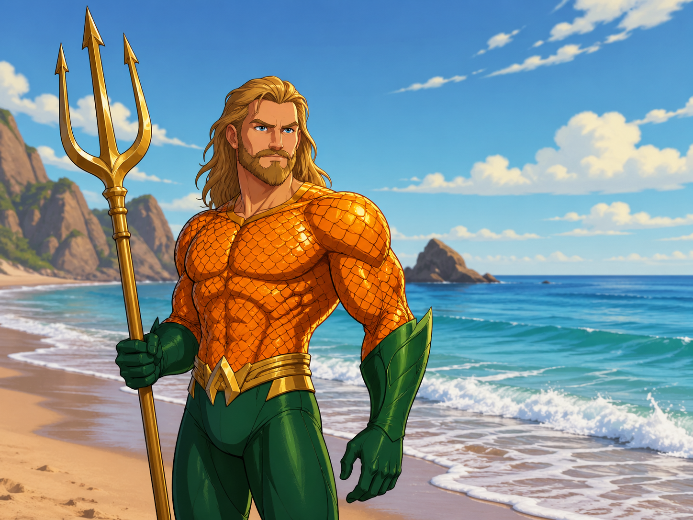

| Aquaman hondartzan aurkitzen da, eta bere emaztea Sirenita salbatu behar du bere etxean harrapaturik baitago. 5 izozkiak harrapatu behar ditu eta itsasora salto egitkeo tranpolin txuria ikutu beharko du. Uretara salto egiten du, marrazoekin oztopo ez egiten saiatzen, eta bitartean txanponak eta bizitzak harrapatzen. Horren ostean, Aquaman misilak ditu, hortaz, marrazoak hil ditzake. Txanpon guztiak hartzean itsaso azpian eskubitara dagoen ate urdina ikutu beharko du laberintora iritsteko. Laberintoan etsaiekin oztopo egin gabe altxorrara iritsi eta opari bat hartuko du Sirenitari emateko. Laberintoaren eskubiko aldean atea ikusi ondoren Sirenitaren etxera iritsiko da eta beraien logelara sartzen direnean (txanpon guztiak lortu behar dira jokua irabazteko) biak batera jokua amaituta emango da. Aquaman eta Sirenita betirako! |
 |
|
 |
Ipuin honen protagonista Aquaman da. Lehenik hondartzan aurkitzen da eta bere helburua Sirenita salbatzea da bere etxean dagoelako altxor batean sartuta. Orduan, itsasora sartuko da eta marrazoak oztopatzen eta bere fusilekin marrazoak hiltzen, eskuinean dagoen argi urdinarekin laberinto batera joango da. Bertan etsaiak oztopatuko ditu altxorrara iritsi arte. Bertan bihotz bat egongo da non jarraituko dion sirenitaren etxeraino. |